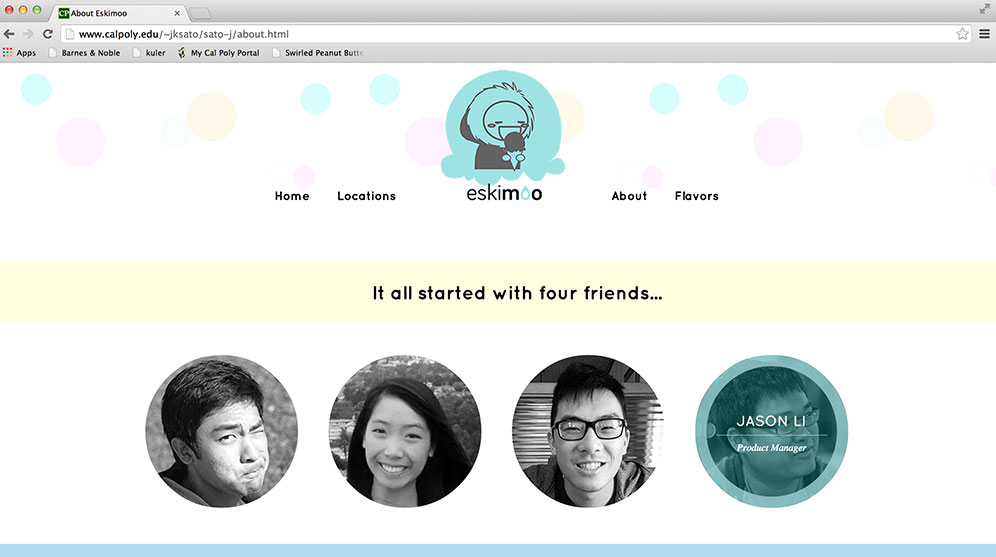
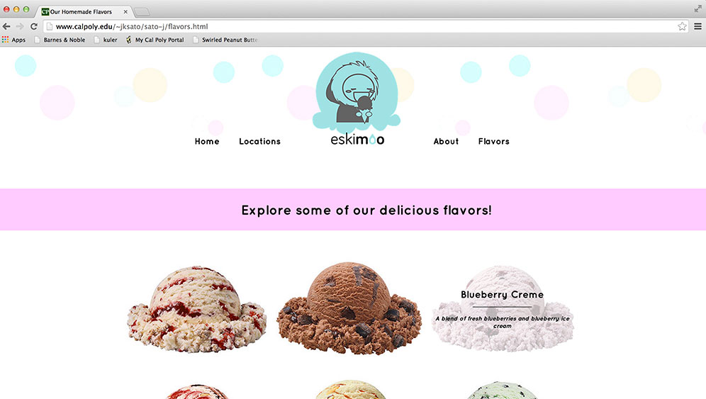

Eskimoo Website
Digital / Web Design
Illustrator, Photoshop, Sublime Text
For my Web Design and Production class, I created a site for a fictitious company called Eskimoo Creamery. I came up with the company name and I created the adjoining logo. The requirements for the site were that it had to consist of four pages and that HTML5 and CSS needed to be used. My four pages consisted of a Home Page, a Locations Page, an About Page, and a Flavors Page. Through the production of this site, I also learned about JavaScript and I incorporated a little bit of JS into my website. I tried to keep my site simple, yet fun. Since ice cream is very happy and celebratory, I tried to convey those emotions through my designs.


